Intro to Game Development
Part 1
Holden Profit
What is a game?
Games are media just like movies and books, but what separates them from these things?
They're interactive media! This makes it a powerful way to tell stories and enjoy
all kinds of experiences!
Modern AAA Games
Amazing Games with tons of developers and huge budgets!

Uncharted 4: A Thief's End - Naughty Dog

Overwatch - Blizzard

Dark Souls 3 - From Software
Those look cool!
When can I make games like those?!
Well, first...
We need to understand the basics of a game, and that's
most easily done with simpler (probably 2D) games.

Mario Bros. - Nintendo

Megaman - Capcom

Contra - Konami
Course Overview
You'll learn the fundamentals of game development:
The anatomy of a game, basic physics, and even some artificial intelligence.
By the end, you'll be able to build your own 2D game
which will be demonstrated as the class capstone project. Primary
technology used will be Javascript ES6, Webpack, and Phaser.
Part 1 Outline
Core Structure of a Game
What Does a Game Actually Do?
- Respond to player input
- Render graphics to the screen
- Enforce game rules on entities

Basic Game Lifecycle
// We'll be referencing this a lot!
let gameIsPlaying = true;
startup();
while (gameIsPlaying) {
processInput();
updateEntities();
render();
}
tearDown();
Start by Rendering
While it's the last step in the game loop process, it's the best starting point because from there you can see your entity updates and responses to input represented visually on the screen.
2-Dimensional Coordinates
My guide to basic vector principals can be found here.
Vectors are a way to represent direction and velocity while Points represent a location in space.
For all intents and purposes, Vectors can almost always be used to represent a Point as well.
2-Dimensional Coordinates
We use these Vectors to represent where an entity is within the world.
Computer screen y coordinates go in the opposite direction of your
typical graph.

2-Dimensional Coordinates
If I want to render the square in the lower-middle of the screen, it'd look something like this:

2-Dimensional Coordinates
In addition to location, the square will also have a rotation and scale associated with it.

Z-Index
Despite being a 2D game, entities will also have a z coordinate known as a Z-Index.
The closer the Z-Index to the camera, the less likely it is to be drawn over by another entity.
Z-Index
Z-Index allows us to create some neat effects, including psuedo 3D rendering:

Z-Index
Z-Indexing can be used to easily split a 2D game into layers:
- Background
- Foreground
- Entities
- HUD
These layers can be rearranged or have layers added for visual effects as needed.
Much like an old animation technique known as a "multiplane camera", these layers can be used to give the illusion of depth and distance.
Layers
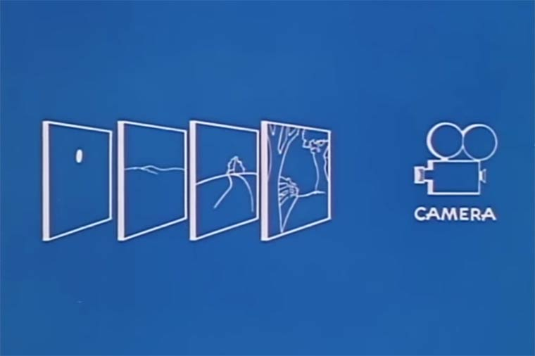Layer - Background

Layer - Foreground

Layer - Entities

Layer - HUD Elements

Layers - Parallax Scrolling

Sprites
Most games don't just use standard shapes to represent game entities, they use sprites!
Sprites are 2D Bitmap data that are rendered to a screen.
Sprites
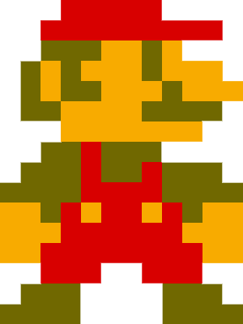Sprites - Animating
A single sprite is cool, but some games might call for a bit more motion than a single still frame
of your character. They need to run, jump, throw, etc.!
Your character might have many still frames, each depicting a different moment in time.
These are combined onto a single image called a "sprite sheet."
Sprite Sheet
Sprites - Animating
How does animating work?
By rapidly swapping which portion of a sprite sheet is drawn to the screen, you create the
illusion of movement.
Think of it as viewing the overall sprite sheet through a small window, we only see a small
portion of the overall image at any given time.
Sprites - Animating
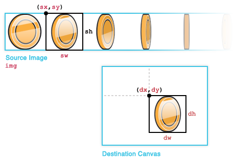Rendering
Recall our game loop from before:
while (gameIsPlaying) {
processInput();
updateEntities();
render();
}
Let's fill out the render function.
Rendering
let render = function() {
background.render();
for(let entity of entities) {
entity.render();
}
player.render();
hud.render();
}
Rendering
class Player {
...
render () {
var canvasContext = document.getElementById('#myCanvas').getContext('2D');
canvasContext.drawImage(this.spriteSheet,
this.currentFrame.x, this.currentFrame.y,
this.frame.width, this.frame.height,
this.x, this.y, this.width, this.height
);
}
};
Processing Input
There are many different control devices available out there and how you build your game depends
heavily on which methods you support.
- Mouse + Keyboard (Can be used separately)
- Game Pad (XBox, PS controller)
- Motion Controls (Vive, WiiMote)
- Touch (iPad, phones)
We'll be sticking to mouse and keyboard for this class as you most likely already have those.
Processing Input
Recall our game loop from before:
while (gameIsPlaying) {
processInput();
updateEntities();
render();
}
Now let's fill out the processInput function.
Processing Input
class Player {
...
handleInput(keys) { ... }
}
let processInput = function(player) {
// Grab the directional keys and
// pass them to the player
let pressedKeys = keyboard.createCursorKeys();
player.handleInput(pressedKeys);
};
Processing Input
class Player {
...
handleInput(keys) {
if (keys.left.isDown) {
// Move to the left
this.x -= 10;
}
else if (keys.right.isDown) {
// Move to the right
this.x += 10;
}
}
}
Why might this be a bad idea?
Processing Input
The previous approach will move the player, but is at the mercy of the frame rate of the game.Frame rate is the rate at which new frames are rendered to your display. More graphically intense games can cause this to be lower as the computer spends more time calculating what needs to be drawn.
We can fix this by instead setting our player's velocity and updating using delta time - the amount of time between frames.
Processing Input
class Player {
...
handleInput(keys) {
// Reset player velocity
this.velocity.x = 0;
if (keys.left.isDown) {
// Move to the left
this.velocity.x = -100;
}
else if (keys.right.isDown) {
// Move to the right
this.velocity.x = 100;
}
}
}
Enforcing Game Rules
So now that we have basic player input, what do we do with it?
Enforcing our game rules is what actually makes the game!
Enforcing Game Rules
What sort of rules might we have?
- Limitations on character action
- Enemies that antagonize the player
- Friendly NPCs that help the player
- Physical interactions with the world
There can be more or less depending on the type of game you're building!
Enforcing Game Rules
Perhaps the most immediately obvious rule to enforce is physics.
While not all games necessarily need physics, a good deal of games need at least simple physics to run.
Physics can range from simple circle-to-circle collision and gravity to more complex 3D object collisions and force calculations.
Gravity
Earlier we made our player move left and right, but didn't implement any sort of jump ability. This is because we didn't yet have any form of gravity!
Gravity
let applyGravity = function(deltaTime, entity) {
// If the entity's velocity is less than the constant
// gravity velocity, increment it until it is equal to
if (entity.velocity.y < CONST_GRAVITY) {
entity.velocity.y += CONST_GRAVITY * deltaTime;
}
else {
entity.velocity.y = CONST_GRAVITY;
}
// Increment y pos by y velocity multiplied
// by time since last update
entity.y += entity.velocity.y * deltaTime;
}
Collisions
How does the computer know all these objects are colliding? Math.
Lots and lots of math.
Let's start with a simple but useful form of collision.
Point on Circle
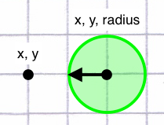Point on Circle
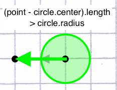Point on Circle
let pointInCircle = function(point, circle) {
let distance = point - circle.center;
distance = distance.length();
return distance <= circle.radius;
}
Point on AABB
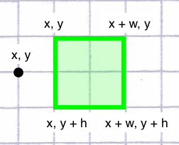Point on Circle
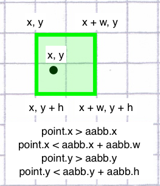Point on Circle
let pointInAABB = function(point, aabb) {
return (point.x > aabb.x &&
point.x < aabb.x + aabb.width &&
point.y > aabb.y &&
point.y < aabb.y + aabb.height);
}
Circle on Circle
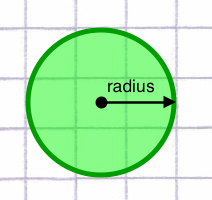Circle on Circle
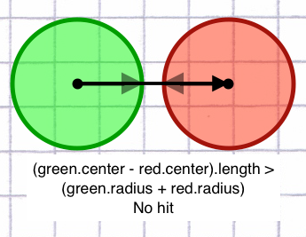Circle on Circle
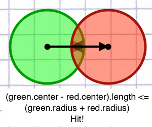Circle on Circle
// circleA and circleB both have a Vector2 position
// object and a radius
let collideCircles = function(circleA, circleB) {
let currentDistance = circleA.position - circleB.position;
currentDistance = currentDistance.length();
let collisionDistance = circleA.radius + circleB.radius;
return currentDistance <= collisionDistance;
}
AABB on AABB
AABB: Axis Aligned Bounding Box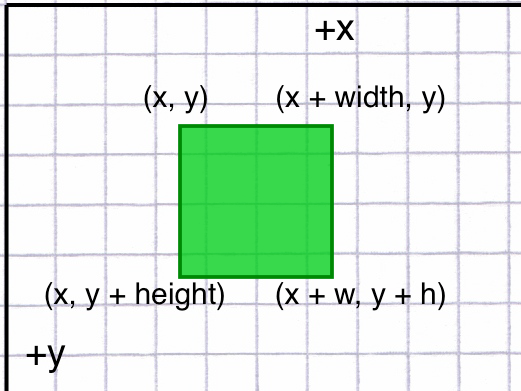
AABB on AABB
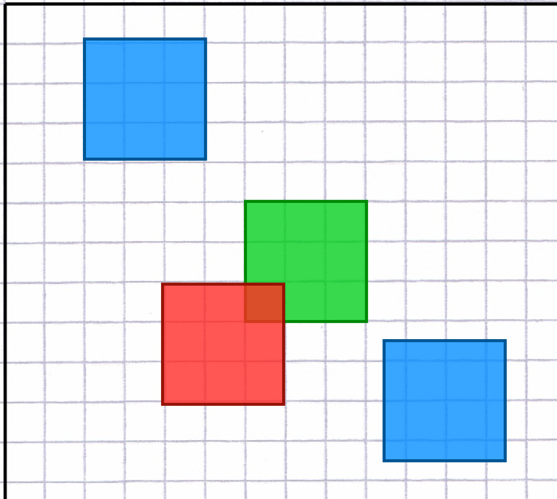AABB on AABB
AABB on AABB

AABB on AABB
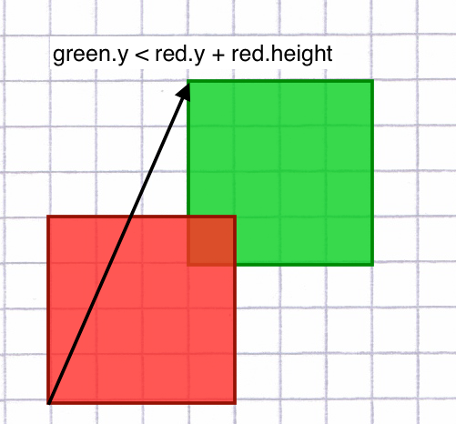AABB on AABB
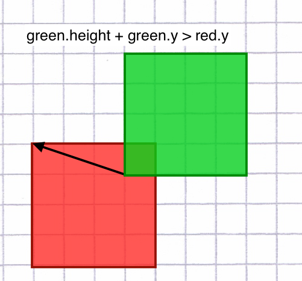AABB on AABB
// rectA and rectB both have an X, Y, width, and height
let collideAABB = function(rectA, rectB) {
return (rectA.x < rectB.x + rectB.width &&
rectA.x + rectA.width > rectB.x &&
rectA.y < rectB.y + rectB.height &&
rectA.height + rectA.y > rectB.y);
}
Circle on AABB
This is a bit more involved than the previous two forms of collision.It can be broken up into three parts, the first two serving as a sort of "definitely inside/outside the AABB" for the circle.
Circle on AABB
Define the circles of the AABB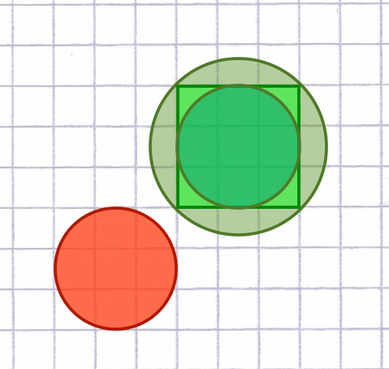
Circle on AABB
Pre-calculate the outer circle of the AABB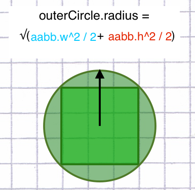
Circle on AABB
Pre-calculate the inner circle of the AABB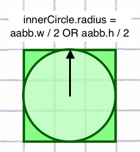
Circle on AABB
Test against outer circle of AABB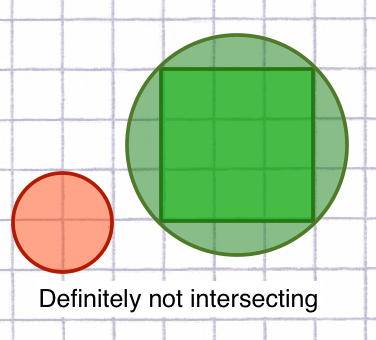
Circle on AABB
Test against outer circle of AABB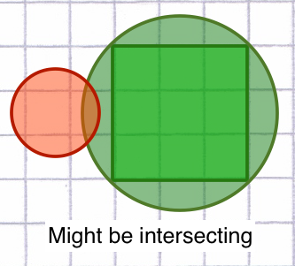
Circle on AABB
Test against inner circle of AABB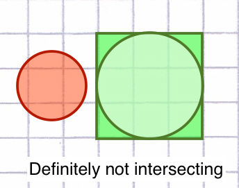
Circle on AABB
Test against inner circle of AABB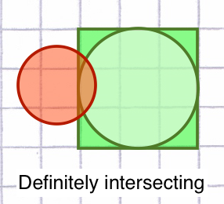
Circle on AABB
What if...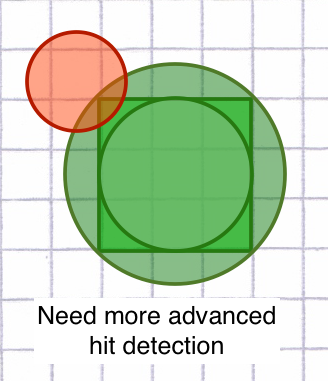
Circle on AABB
Get both center vectors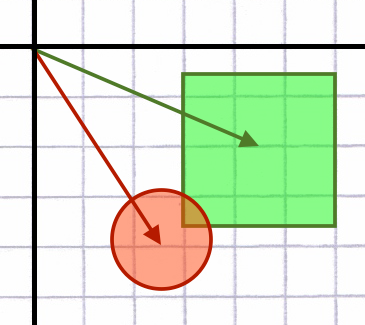
Circle on AABB
aabb.center - circle.center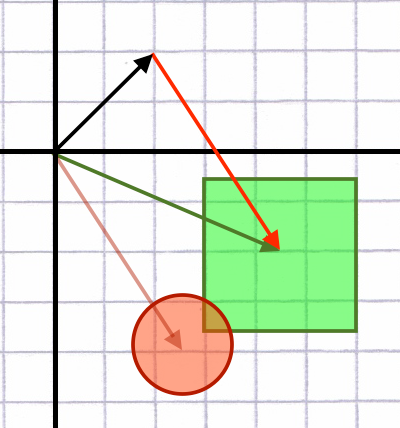
Circle on AABB
Normalize the result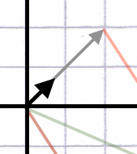
Circle on AABB
Multiply by circle.radius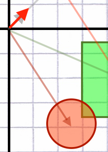
Circle on AABB
Add to circle.center for circle's edge point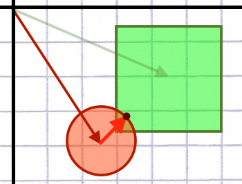
Circle on AABB
let collideCircleAndAABB = function(circle, aabb) {
let distance = (circle.center - aabb.center).length();
if (distance > (circle.radius + aabb.outerRadius)) {
return false;
}
else if (distance < (circle.radius + aabb.innerRadius)) {
return true;
}
else
return pointInAABB(getEdgePoint(circle, aabb), aabb);
}
}
Circle on AABB
let getEdgePoint = function(circle, aabb) {
let direction = circle.center - aabb.center;
direction.normalize();
direction *= circle.radius;
return direction + circle.center;
}